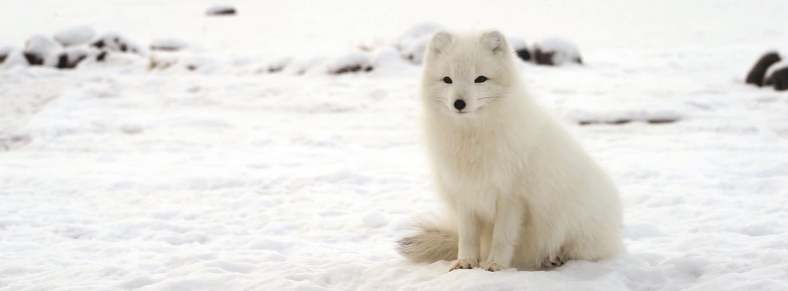

RED PANDA (Ailurus fulgens)
ANIMAL CHOICE
I had previously been researching the Arctic Fox, and really enjoying it. However, because the Central Park Zoo did not have this animal on display, I chose the red panda. I wanted to choose the closest animal I could to an arctic fox and the red panda is similar in size, is also usually a solitary animal (as opposed to social), and is a mammal.
ETHOGRAM OBSERVATION
A few scientists believe that the arctic fox uses the magnetism of the earth like a compass and are best at pin-pointing and catching prey when they are facing north. This device could shift to different orientations to test this behavior as well. Additionally, they are facing threat from the larger "red fox" as it moves north into their territory due to climate change, and their primary prey, the lemmings, are also becoming more scace. For this reason, I believe that honing their precision capabilities may be integral to their survival amidst these new challenges.